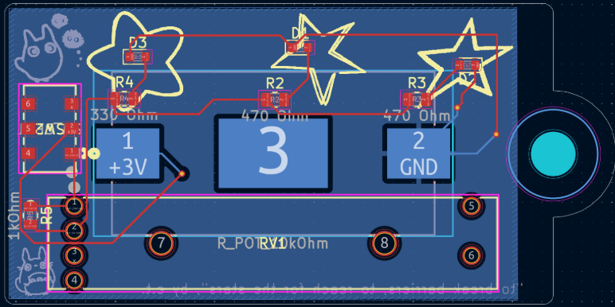
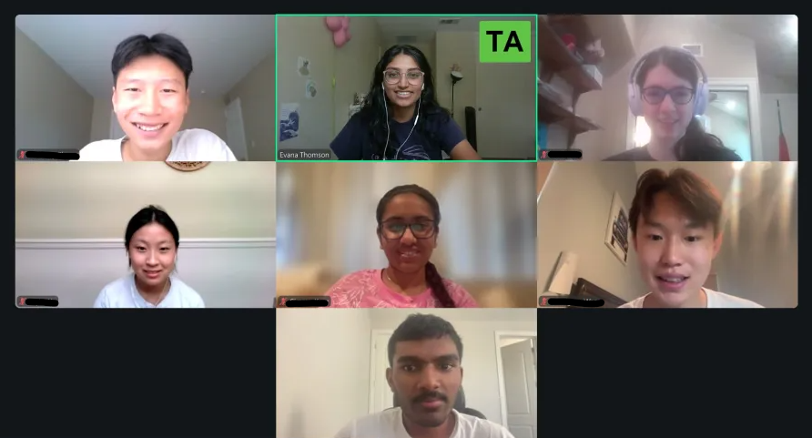
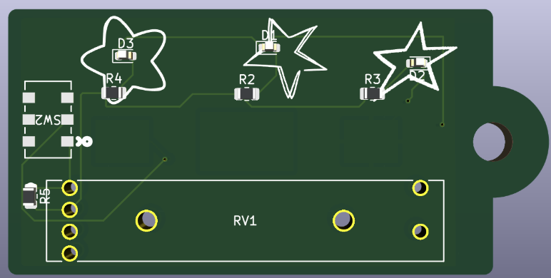
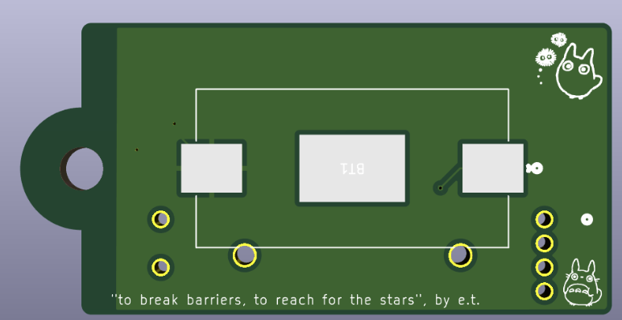

Designed and ran a two-week PCB design workshop, teaching a group of beginners how to go from a blank schematic to a fabricated, assembled board. The curriculum ran async recorded sessions alongside live office hours, spread across two weeks of sessions.
I built the LED keychain and used it as the vehicle for teaching core concepts including the physics behind common PCB electronic components (resistors, capacitors, LEDs, potentiometers, diodes, and transistors). Also taught how to source parts, walked students through schematic capture, footprint assignment, and layout in KiCad.
Students finished their own keychain board end to end — schematic, layout, via placement, silkscreen artwork, mounting holes, and resolving DRC errors — then sent it out for fabrication and assembly through JLCPCB.
Here are the videos, slides, and any other extra stuff the students needed: workshop materials ↗